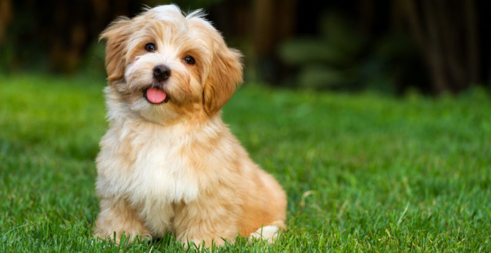
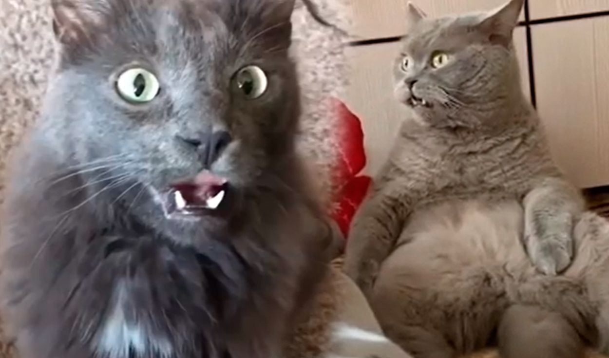
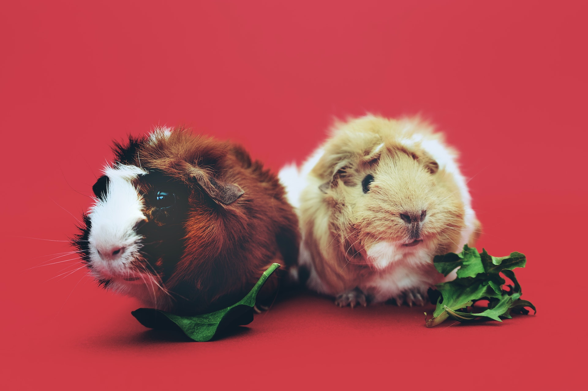
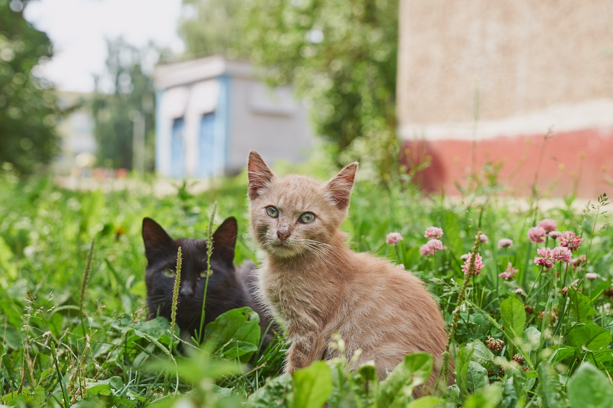
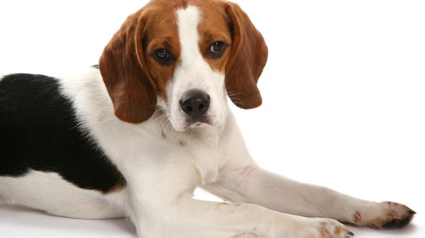

Los perros son los animales de compañía por excelencia en el mundo. ¿Por qué? Porque estas especies tienen la mayor presencia y el más estrecho vínculo en cualquier estructura familiar de cualquier país o región más allá de su cultura o de su ubicación geográfica. En ese marco, sabemos de su paralelismo con el lobo: se trata nada más y nada menos que de una similitud incluida en el ADN. Durante el período Paleolítico los seres humanos “crearon” al perro. Esto se dice porque en aquellos años domesticaron a un grupo de lobos más mansos y valientes que se acercaron a los hombres y a las mujeres mucho más que otros animales. Este fenómeno de la domesticación del lobo y del nacimiento del perro marcó un hito fundacional en el estilo de vida del planeta Tierra. Así las cosas, este fue el comienzo de una relación que parece haber surgido de la siguiente premisa: “Cuidame de noche y yo te alimento de día”. Como se ve, se trata de un lazo muy fuerte que marcó el inicio del contrato animal más dúctil, preciso y trascendente de toda la evolución del ser humano.

El gesto de abrir la boca después de oler prendas o a gatos del sexo opuesto ha generado risas entre los que tienen como mascota a un minino. Conoce a qué se debe su cara ‘de asco’. ver mas..

Si adoptas hazlo con responsabilidad

Adopta un gato un buen amigo del hombre
El mejor amigo que puedes tener
¿Cuál es la historia de Vaguito? Vaguito es un perro que vive en Perú, precisamente en Punta Negra, donde cada día se dirige a la playa para esperar a su dueño ya fallecido. La historia del can se hizo viral en las redes sociales gracias a Jolie Mejía, una mujer que pasaba por la zona frecuentemente y que notó que el animal se sentaba a esperar a alguien cerca de las orillas del mar. Mejía se percató que el canino no tenía ninguna complicación y que, incluso, contaba con un collar, por lo que le parecía extraño que siempre se mantenga estático sin motivo aparente.
LPor su parte, el servicio de protección de la naturaleza de la Guardia Civil (Seprona) confirma que en 2020 “los delitos que más aumentaron fueron los relacionados con el maltrato animal, la caza y los relativos a la protección sobre la flora y la fauna”. En total, realizaron 10.459 denuncias con animales de compañía y 8.427 relacionadas con la sanidad animal. Denuncias sin efecto Este año, uno de los casos que más repercusión ha tenido desde el punto de vista social es el del laboratorio de Vivotecnia, ubicado en Madrid, donde la Fiscalía de Medio Ambiente ha abierto diligencias. “Hay más denuncias ahora, pero no se convierten en un castigo real”, comenta Rubén Pérez, portavoz de la Fundación Franz Weber. “Hay 17 normativas diferentes y un mismo delito puede suponer una sanción de 150.000 euros en Aragón y 30.000 en Galicia. Además, el afectado puede declararse insolvente”, añade.
El gesto de abrir la boca después de oler prendas o a gatos del sexo opuesto ha generado risas entre los que tienen como mascota a un minino. Conoce a qué se debe su cara ‘de asco’. ver mas..

Las garrapatas pueden afectar a nuestras mascotas, sin importar la temporada. Sin embargo, además de causar escozor y estrés en perros y gatos, estos parásito s pueden transmitir enfermedades como Ehrlichiosis, anaplasmosis, babesiosis y enfermedad de Lyme, así lo comenta la doctora Elena Andrade, médico veterinaria responsable del Centro de Adopciones de Mascotas de la Municipalidad de San Borja. Estos parásitos están presentes principalmente en parques, terrenos áridos, y en general, lugares con alto tránsito de mascotas. Existen varias formas de prevenir su infestación, las presentaciones de productos que protegen contra parásitos externos incluyen collares, spray, pipetas y masticables. Es importante recordar que si bien es en verano cuando se da un incremento en la cantidad de estos parásitos, debido a que sus ciclos de vida se acortan, nuestras mascotas deben estar protegidas de manera preventiva durante todo el año. "En el caso de que encontremos garrapatas en nuestra mascota, lo recomendado es llevarlo lo antes posible al médico veterinario para que nos ayude a removerlas, tomar medidas preventivas y establezca un tratamiento en caso fuese necesario", comenta la especialista.
El gesto de abrir la boca después de oler prendas o a gatos del sexo opuesto ha generado risas entre los que tienen como mascota a un minino. Conoce a qué se debe su cara ‘de asco’. ver mas..
Desde 1975, Canine Companions ha puesto 7.200 perros al servicio de personas que los necesitan, todo sin cargo. Los perros son entrenados durante más de dos años para aprender más de 40 comandos que ayudan a mejorar la vida de las personas. Para Izzy Sherman, una niña de diez años que usa un andador, su nueva perra de servicio será un "cambio revolucionario".
El gesto de abrir la boca después de oler prendas o a gatos del sexo opuesto ha generado risas entre los que tienen como mascota a un minino. Conoce a qué se debe su cara ‘de asco’. ver mas..